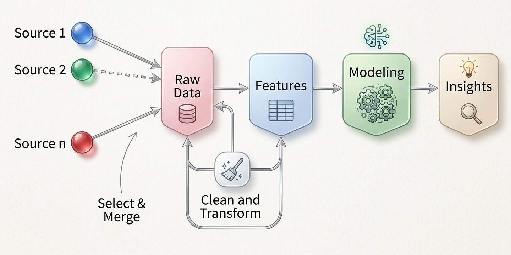

7 Ingeniería de Características: Creación, Transformación y Codificación de Atributos
7.1 Fundamentos y Propósito de la Ingeniería de Características
En el flujo de minería de datos y la Inteligencia de Negocios, los algoritmos de aprendizaje automático no operan directamente sobre conceptos abstractos de negocio, sino sobre representaciones numéricas y categóricas organizadas en tablas de datos (Shmueli et al. 2018). La Ingeniería de Características (Feature Engineering) es el proceso metodológico de transformar datos crudos en atributos estructurados que sinteticen mejor la realidad del fenómeno estudiado, aumentando la capacidad discriminativa y predictiva de los modelos (Provost and Fawcett 2013; Tan et al. 2019).
A menudo se asume erróneamente que el rendimiento de un sistema analítico depende primordialmente de la sofisticación del algoritmo seleccionado (ej. redes neuronales profundas o modelos de ensamble). Sin embargo, la práctica profesional demuestra que una representación rica y bien diseñada del dominio del negocio supera de forma consistente a la complejidad algorítmica (Provost and Fawcett 2013). Crear variables expresivas permite simplificar el espacio de búsqueda de los patrones, facilita la interpretabilidad de los resultados para la toma de decisiones y mitiga el problema de la alta dimensionalidad (Tan et al. 2019).
De este modo, la ingeniería de características actúa como el puente entre el conocimiento intuitivo del experto de dominio y el rigor matemático de la minería de datos. Al transformar variables simples en indicadores compuestos, binarizar categorías o discretizar rangos numéricos, el analista inyecta hipótesis de negocio directamente en la matriz de datos de entrada (Provost and Fawcett 2013; Shmueli et al. 2018).

7.2 Creación de Variables
La creación de atributos consiste en combinar o transformar variables existentes para construir nuevos indicadores que midan directamente la intensidad, proporción o tendencia de un fenómeno (Provost and Fawcett 2013; Shmueli et al. 2018).
7.2.1 1. Ratios y Tasas Financieras o Comerciales
Las variables absolutas (como el ingreso bruto o la deuda total de un cliente) suelen estar condicionadas por la escala del sujeto de estudio (Shmueli et al. 2018). Construir ratios y proporciones permite estandarizar las mediciones y capturar el nivel de riesgo o eficiencia de manera comparable entre distintas observaciones (Provost and Fawcett 2013):
Proporción:
\[P_A=\frac{\#A}{N}\]
\[R_{a/b}=\frac{\#A}{\#B}=\frac{t_a}{t_b}\]
7.2.2 2. Transformaciones No Lineales y Escalamiento
Cuando las variables cuantitativas presentan distribuciones fuertemente asimétricas hacia la derecha (right-skewed) o diferencias extremas de escala, se deben aplicar transformaciones matemáticas para estabilizar su varianza y ajustar su comportamiento (Torgo 2017; Tan et al. 2019).
Transformación Logarítmica: Aplica la función \(y = \log(x)\) (o \(y = \log(x + 1)\) si existen valores nulos) para comprimir escalas numéricas de alta dispersión (como ingresos, precios de inmuebles o poblaciones) y reducir la influencia desproporcionada de valores extremos (Torgo 2017; Tan et al. 2019).
Transformación Box-Cox: Una familia de transformaciones de potencia parametrizada por \(\lambda\) utilizada para aproximar variables continuas hacia una distribución normal multivariante (Johnson and Wichern 2014): \[y_{i}^{(\lambda )}={\begin{cases}{\dfrac {y_{i}^{\lambda }-1}{\lambda }}&{\text{if }}\lambda \neq 0,\\\ln y_{i}&{\text{if }}\lambda =0,\end{cases}}\]
La Estandarización Z-score \[z = \frac{x - \bar{x}}{\sigma}\]
La Normalización Max-Min \[y = \frac{x - \min(x)}{\max(x) - \min(x)}\]
Escenario: Una entidad financiera en Bolivia desea predecir la probabilidad de mora en créditos de consumo. El dataset original contiene únicamente cuatro columnas: ingreso_mensual, monto_credito_solicitado, plazo_meses y cantidad_dependientes_familias.
- Propongan dos nuevos indicadores (ratios o combinaciones) creados a partir de las cuatro variables originales que capturen mejor la capacidad real de pago del cliente.
- Justifiquen si aplicarían una transformación logarítmica sobre la variable
ingreso_mensualantes de entrenar un modelo predictivo lineal y comente el impacto en la distribución.
7.3 Codificación y Tratamiento de Variables Categóricas
Las variables cualitativas o categóricas (como el estado civil, la sucursal o el tipo de contrato) requieren ser representadas en un formato numérico adecuado para que la mayoría de los algoritmos de minería de datos puedan procesarlas (Shmueli et al. 2018; Tan et al. 2019).
7.3.1 Binarización y Variables Indicadoras (Dummy / One-Hot Encoding)
Consiste en descomponer una variable categórica nominal que posee \(m\) niveles disjuntos en un conjunto de variables binarias \(\{0, 1\}\) (Shmueli et al. 2018; Tan et al. 2019).
Categoría Original (Sucursal) |
Dummy 1 (sucursal_LaPaz) |
Dummy 2 (sucursal_Cochabamba) |
Dummy 3 (sucursal_SantaCruz) |
|---|---|---|---|
| La Paz | 1 | 0 | 0 |
| Cochabamba | 0 | 1 | 0 |
| Santa Cruz | 0 | 0 | 1 |
Para evitar la multicolinealidad perfecta en modelos de regresión lineal o logística, se debe omitir una de las categorías para que actúe como nivel de referencia. De este modo, un factor con \(m\) categorías genera exactamente \(m - 1\) variables dummy auxiliares.
7.3.2 Condensación y Agrupamiento de Alta Cardinalidad
Cuando una variable categórica posee docenas o cientos de niveles (ej. 500 códigos postales o 100 profesiones), la binarización directa expande desproporcionadamente el número de columnas del dataset, provocando el fenómeno del aumento excesivo de dimensionalidad.
Para solucionar la alta cardinalidad, se emplean dos estrategias principales:
- Agrupamiento por Frecuencia: Fusionar categorías raras o poco frecuentes (ej. con frecuencia menor al 2% o 5% del dataset) bajo una etiqueta común denominada “Otros”.
- Agrupamiento Experto o por Perfil: Unir categorías que compartan un comportamiento o nivel de riesgo similar respecto a la variable objetivo (por ejemplo, agrupar profesiones según su nivel salarial promedio).
7.4 Discretización y Binning de Variables Continuas
La discretización (o binning) es el proceso de transformar una variable cuantitativa continua en un número finito de intervalos o categorías ordenadas. Esta técnica es fundamental cuando se utilizan modelos que requieren entradas categóricas (como reglas de asociación) o para capturar relaciones no lineales complejas de forma lineal (Tan et al. 2019; Shmueli et al. 2018).
Variable Continua (Edad) ──> [Intervalos / Bins] ──> Categoría Ordinal (Joven, Adulto, Senior)O tambien mediante:
- Ancho Constante: Divide el rango numérico \([\min(x), \max(x)]\) en \(k\) intervalos de amplitud idéntica \(w = \frac{\max(x) - \min(x)}{k}\). Es muy sensible a la presencia de outliers, ya que los valores extremos pueden dejar la mayoría de los contenedores vacíos.
- Frecuencia Constante / Cuantiles (Equal Frequency / Quantiles): Ajusta los puntos de corte (split points) de modo que cada uno de los \(k\) intervalos contenga aproximadamente el mismo número de observaciones (\(N/k\)). Es una técnica robusta que preserva la densidad local de los datos.
Escenario: Se analiza la distribución de la variable valor del dataset de exportación. La variable presenta una concentración masiva valores bajos y unos pocos con valores gigantescos.
Instrucción:
- Explique qué problema ocurriría si aplica una discretización de Ancho Constante con 5 intervalos sobre este atributo.
- Justifique por qué el método de Frecuencia Constante (Cuantiles) o la transformación logarítmica previa resolvería mejor la representación de esta variable para un modelo.
7.5 Variables Temporales, Secuenciales y de Contexto
Las variables asociadas a fechas y marcas temporales (timestamps) contienen una riqueza de información estratégica que no puede consumirse directamente como un número de serie o texto libre. La ingeniería de características para datos temporales se enfoca en tres áreas:
- Descomposición de Componentes de Fecha: Extraer elementos individuales mediante: año, mes, día del mes, día de la semana, trimestre, hora del día e indicador binario de fin de semana o feriado.
- Variables de Rezago y Variación: En series temporales y registros financieros, se construyen variables que comparan el valor actual \(X_t\) con períodos previos \(X_{t-1}\), o que miden variaciones porcentuales relativas \(\Delta \% = \frac{X_t - X_{t-1}}{X_{t-1}}\).
7.6 Implementación Práctica en R con dplyr, forcats y recipes
A continuación, se presentan los flujos de código en R para ejecutar ingeniería de características utilizando tidyverse y el paquete especializado recipes (Shmueli et al. 2018; Wickham and Grolemund 2019).
Uso de mutate(), case_when() y cut() para crear indicadores y discretizar variables:
library(dplyr)
library(lubridate)
# Cargar dataset de clientes simulado
data(iris)
df_transformado <- iris %>%
mutate(
# 1. Transformación logarítmica y escalamiento Z-score
log_petal_length = log(Petal.Length),
z_sepal_width = scale(Sepal.Width),
# 2. Creación de un ratio numérico entre dimensiones de pétalo
ratio_petalo = Petal.Length / Petal.Width,
# 3. Discretización no supervisada por cuantiles (terciles)
categoria_longitud = cut(
Sepal.Length,
breaks = quantile(Sepal.Length, probs = seq(0, 1, length.out = 4)),
labels = c("Bajo", "Medio", "Alto"),
include.lowest = TRUE
),
# 4. Binarización condicional lógica
es_petalo_grande = ifelse(Petal.Length > 4.5, 1, 0)
)Creación de variables dummy y colapso de niveles raras con forcats:
library(dplyr)
library(forcats)
# 1. Colapsar categorías raras de un factor
df_factores <- iris %>%
mutate(
especie_mod = fct_collapse(
Species,
`no_setosa` = c("versicolor", "virginica")
)
)
# 2. Generar matriz de variables dummy implícita (omitida la primera categoría base)
matriz_dummies <- model.matrix(~ Species, data = iris)
head(matriz_dummies)El paquete recipes (parte de tidymodels) permite definir una receta de preprocesamiento modular que se aplica secuencialmente sobre conjuntos de entrenamiento y prueba evitando fuga de información (data leakage):
library(recipes)
# Definir la receta de preprocesamiento e ingeniería de características
receta_preproc <- recipe(Species ~ ., data = iris) %>%
step_log(Petal.Length) %>% # Transformación logarítmica
step_normalize(all_numeric_predictors()) %>% # Estandarización Z-score
step_dummy(all_nominal_predictors()) # Binarización One-Hot
# Preparar la receta con los datos de entrenamiento
receta_preparada <- prep(receta_preproc, training = iris)
# Aplicar las transformaciones
datos_listos <- bake(receta_preparada, new_data = iris)
head(datos_listos)7.7 Cápsula de Ejercicios de Ingeniería de Características
- Creación de Ratios e Indicadores Comerciales: Utilizando el dataset
Bostonde la libreríaMASS, construya un flujo condplyr::mutate()para generar:- Un ratio entre la tasa de criminalidad
crimy la proporción de zonas residencialeszn. - Una variable binarizada
es_casa_costosaque tome el valor de \(1\) si el valor mediano de la viviendamedvsupera el percentil 75 del dataset, y \(0\) en caso contrario.
- Un ratio entre la tasa de criminalidad
- Discretización Comparativa: Tome la variable
agedel datasetBoston:- Aplique una discretización de Ancho Constante de 4 intervalos con la función
cut(). - Aplique una discretización de Frecuencia Constante (Cuantiles) de 4 intervalos utilizando los percentiles (\(0.25, 0.50, 0.75\)).
- Compare mediante
table()la cantidad de observaciones en cada intervalo para ambos métodos y discuta la distribución resultante.
- Aplique una discretización de Ancho Constante de 4 intervalos con la función
- Flujo Integrado con
recipes: Diseñe un objetorecipecon la libreríarecipessobre el dataset de ventas o flores que ejecute la siguiente secuencia en orden:- Transformación logarítmica sobre todas las variables numéricas con sesgo positivo.
- Normalización Max-Min en el rango \([0, 1]\) para todas las variables numéricas.
- Binarización dummy para todas las variables categóricas, verificando que la matriz resultante no contenga columnas redundantes.